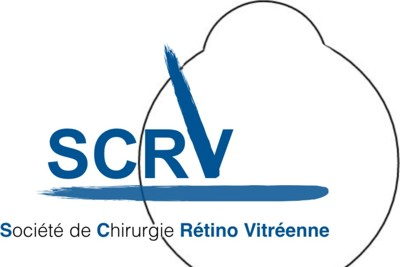
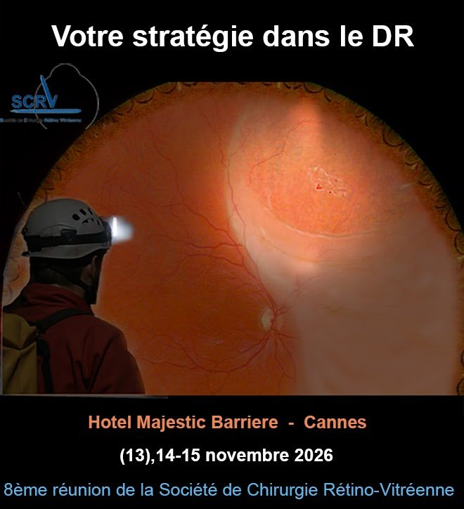
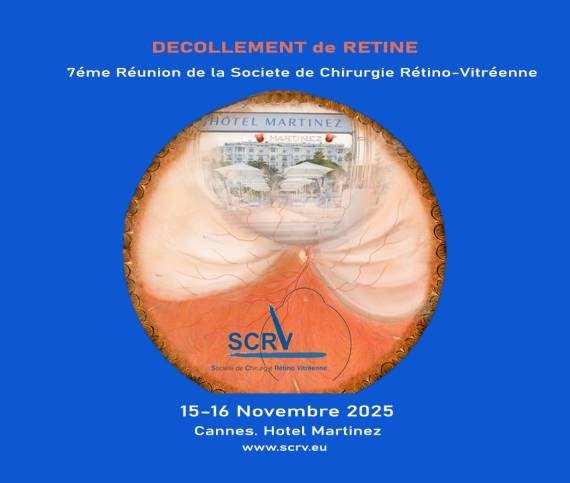
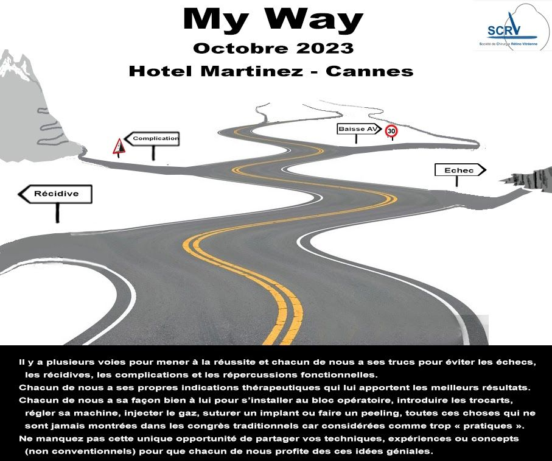

Société de Chirurgie Rétino-Vitréenne
La SCRV et nos publications
Le Dr Alexandre Portmann préside la SCRV depuis 2022 ; le Dr Jean-Paul Amar l'a présidée de 2018 à 2021.

Une société de chirurgiens, par et pour des chirurgiens
Fondée par les Drs Didier Ducournau et Jean-Paul Amar, la Société de Chirurgie Rétino-Vitréenne réunit chaque année à Cannes les chirurgiens de la rétine pour partager librement leur expérience opératoire : films chirurgicaux, analyse des échecs, études multicentriques.
Les trois chirurgiens du cabinet en sont membres et participent activement à ses travaux.

Les congrès de la SCRV à Cannes
Six années d'affiches
- 2026Votre stratégie dans le décollement de rétine14 et 15 novembre 2026 · Cannes
- 2025Décollement de rétine15 et 16 novembre 2025 · Cannes

- 2024Quand ça saigne… ou pas !12 et 13 octobre 2024 · Cannes

- 2023My Way30 septembre et 1er octobre 2023 · Cannes

- 2022Errare humanum est8 et 9 octobre 2022 · Cannes

- 2021Macula et chirurgie : passé, présent, avenir29 et 30 mai 2021 · Cannes

Publications
Les études de la SCRV
- À paraître · Portmann A, Ducournau D, et al. SCRV Macular Surgery Studies : épaisseur maculaire et acuité visuelle après vitrectomie et pelage de la membrane limitante interne. Journal of VitreoRetinal Diseases.
- El-Khoury S, Abdelmassih Y, Ducournau D, Drimbea A, Portmann A ; SCRV macular edema study group. Pars plana vitrectomy with ILM peeling for macular edema of various etiologies: results from the SCRV macula surgery study. Int Ophthalmol. 2025;45(1):352. PubMed
- El-Khoury S, Ngo C, Muraine M, Abdelmassih Y, Portmann A. Pars Plana Vitrectomy and ILM Peeling for Refractory Diabetic Macular Edema Without Vitreomacular Traction. J Clin Med. 2025;14(11):3686. PubMed
Toutes nos publications et communications · Toutes les publications sur scrv.eu